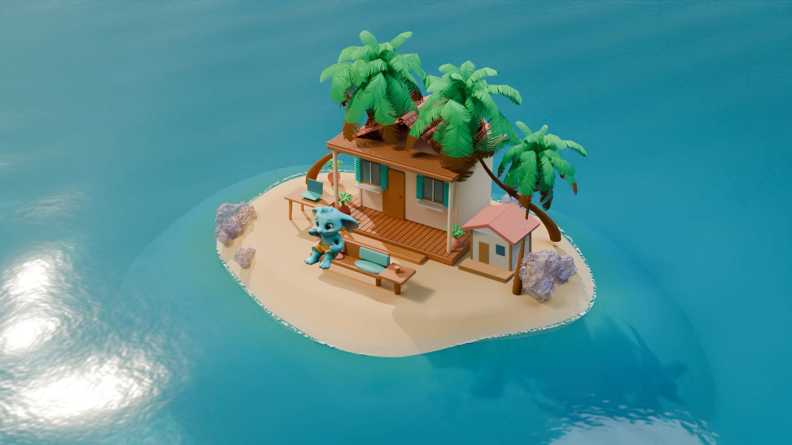
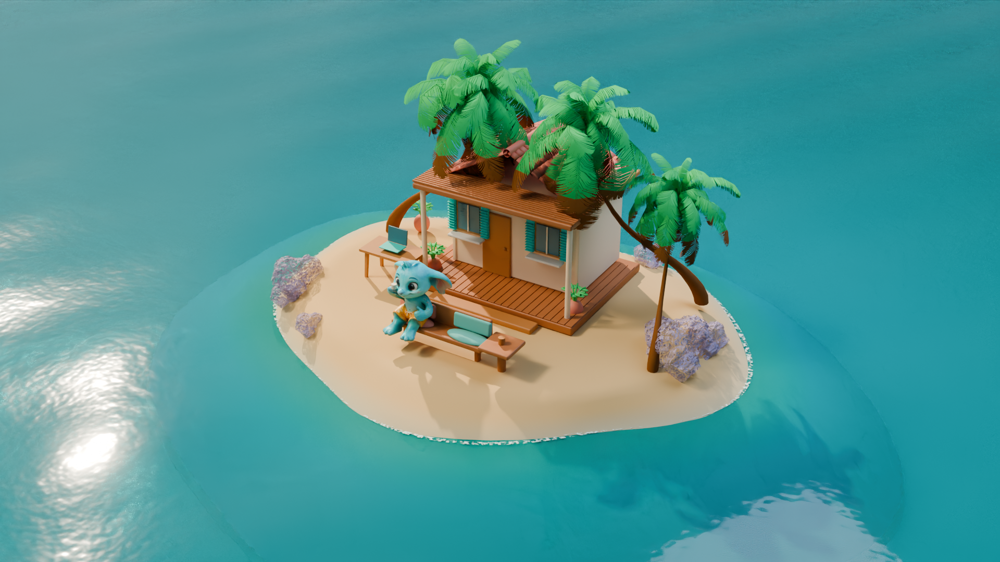
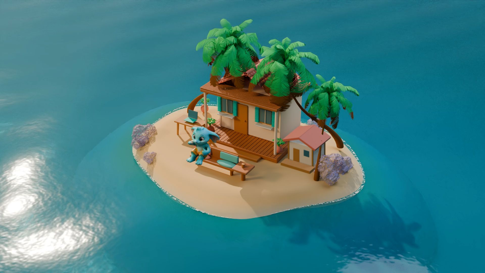
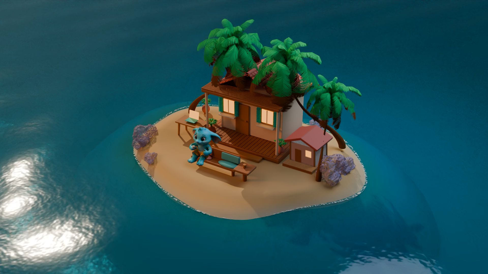
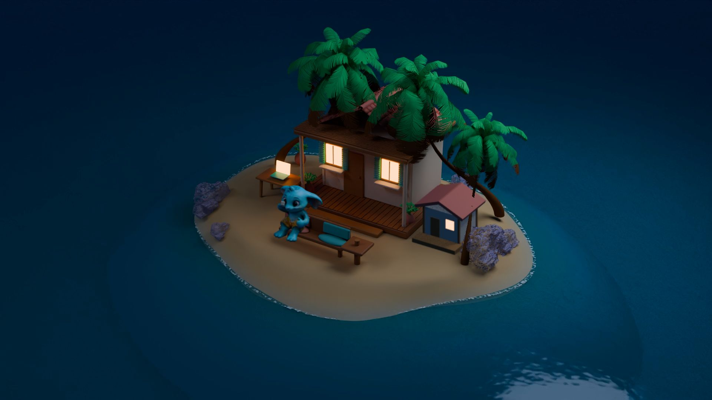
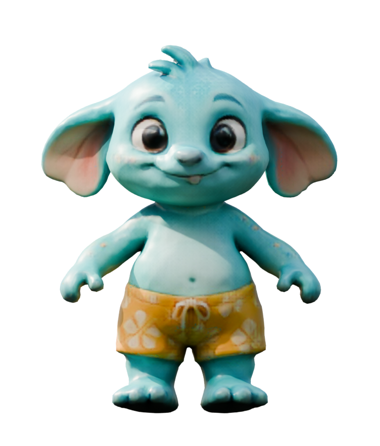
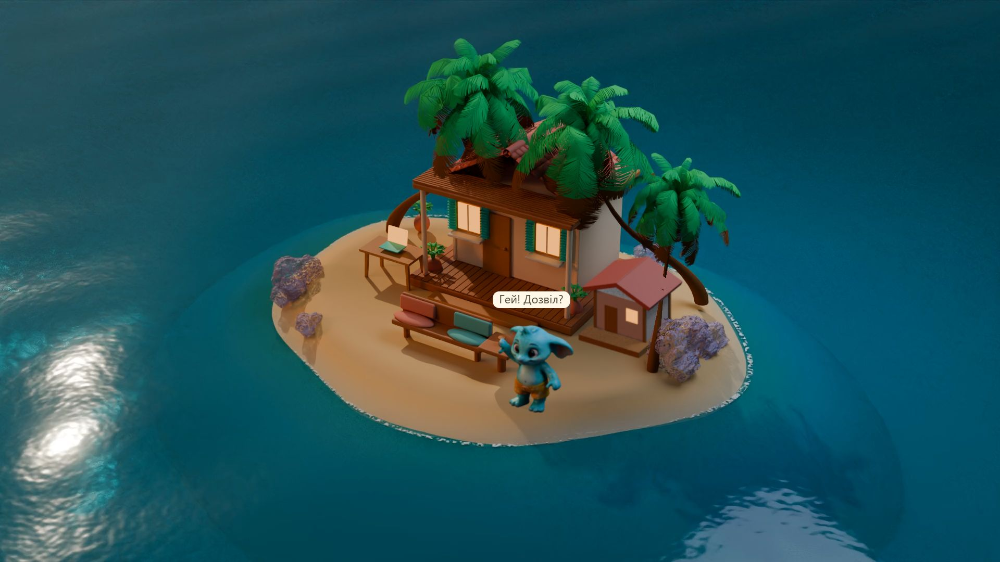

Казкова бірюзова лагуна · V6
Готові шари V6: зелені пальми, теплий пісок, коралові й м’ятні акценти, пастельні камені та бірюзове мілководдя. Хвилі, прозорість, відбиття й берегова піна відрендерені в Blender. Pip став більшим; камера зберігає вид на весь острів.

Фінальний кадр із нативного Lively, 1920 × 1080. Pip сидить на подушці; ноги перед краєм лавки.
Фінальна денна вода: 12 секунд, 30 кадрів/с, 1920 × 1080. Стик перевірений після кодування; є також 720p і вимкнення води.
Pip залишається

Перевірка нової посадки справжнім 3D-рендером. Pip збільшений, ноги перед краєм лавки, чашка в руці. У плеєрі додані окреме вставання, обхід меблів та анімовані рухи під час відпочинку.
Перевірити реакції, посадку та освітлення →. Під час відпочинку Pip п’є, киває й прикриває рот рукою при позіханні. Це рухи тіла: міміка рота й повік та їжа ще не реалізовані.
За місцевим часом ПК: ранок із 06:00, день із 09:00, вечір із 18:00, ніч із 21:00. Плавний перехід триває дві хвилини. Освітлення можна обрати вручну.
На цьому ПК повні шпалери дали близько 30 кадрів/с без пропусків у 30-секундних замірах: 2,3–3,4% загального CPU та 929–943 MiB сумарного RSS. Перехід освітлення потребує двох декодерів і більше GPU: близько 29% лічильника Video Decode. На паузі вода й Pip зупиняються. Джерела, інструкція й повні перевірки у draft PR →

Ранок — окремі готові шари.
Вечір із теплими вікнами.
Ніч: місячне світло, теплі вікна й делікатне світіння відблисків, запечене у Blender.

Збережена текстурована 3D-модель, адаптований ріг.
Запит дозволу: Pip підходить ближче й махає.Поточні шпалери → · Попередній перегляд Pip V5 →